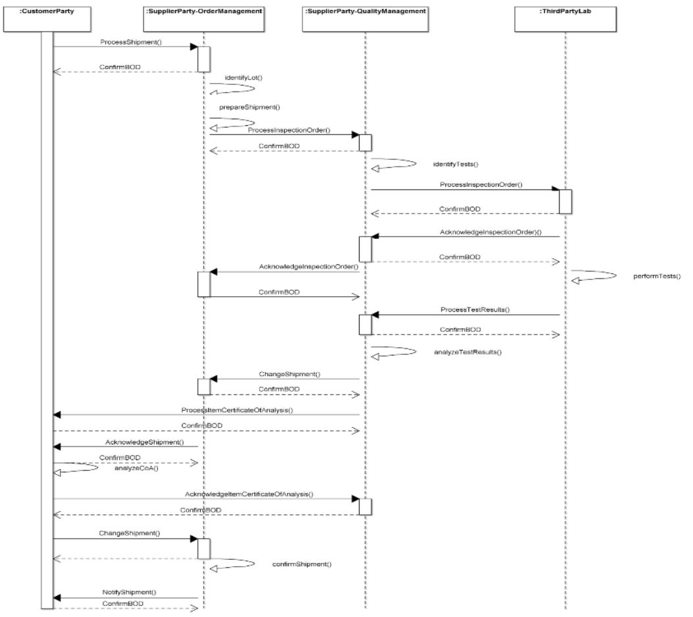

Scenario 70 - Supplier Provided Certificate of Analysis70.0 OverviewScenario #70 describes the integration of business software involved with the process through which a customer requests a shipment of goods with specific characteristics from a supplier, but only authorizes that the shipment take place after receiving official notice that the goods have been tested to verify that they contain the desired characteristics. The official notice describing the results of testing is called a certificate of analysis or COA. This scenario also illustrates how the supplier can use an independent third party laboratory to perform the testing of samples from the goods to be shipped and then relay the results of testing to the customer using a COA for approval before shipping the goods.TThe purpose of this scenario is to describe the participants in a mainstream business process, and to illustrate how the business systems of those participants can be integrated through messages exchange to realize the goals of that business process. This scenario is not meant to be the only model for integrating customer, supplier, and third party lab applications. It is simply one model that may be used to guide one's own integration efforts. Since the function and composition of the business software components that might be used to produce or exchange the information described in the scenario vary widely, specific software components will not be described. Software components which might be involved in realizing this scenario include:
70.1 Scenario DiagramThe scenario below contains the participants involved in the interaction, the dialog flows or conversation between them, certain assumptions about the sequence of events, and assumptions about the technical approach, for example, whether a publish and subscribe or a query and response model is used for the exchange of information. This is a model to be used as a design recommendation, not a required approach.This is a model to be used as a design recommendation, not a required approach..  70.2 AssumptionsThis scenario assumes a loosely coupled, asynchronous approach with transaction management required but not explicitly defined.This scenario describes how one or more components of a Customer�s business systems can interact with one or more of the business systems of a supplier to request the shipment of goods. It also shows how one or more of a supplier�s business systems can interact with one or more of the business systems of a Third Party Laboratory for testing services. The environment for this integration may include a single external organization or several external organizations. There may be instances where all of the data is contained in the documents and other instances where additional binary information accompanies the InspectionOrder, TestResults, Shipment, and/or ItemCertificateOfAnalysis documents. For this scenario, it is assumed that the customer and the supplier have a standing agreement about what kinds of goods are to be shipped and the characteristics that the goods must possess. The process through which this happens is out of scope and is not described here. Also, any processes related to the transport of the physical goods or the receipt of the physical goods by the customer are out of scope and are not described here. The creation of samples labeled in accordance with the associated InspectionOrder is required but not depicted. Similarly, the manual exchange, from the Supplier to the Third Party Laboratory, of the labeled samples upon which testing is to be performed is required but not depicted. Several potentially multi-step manual processes, such as identifying which lot is to be sent to customer and performing tests on samples drawn from the product lot, are included in the diagram to provide a more complete illustration of the business process. By convention, these activities are depicted as messages that start and end at the same business process participant, and do not indicate that actual messages between systems need to be implemented for the processes to take place. The diagram and descriptions of the business process for this scenario focus on how a successful execution of the business process should take place. There may be several places in this business process where errors can occur and corrective actions must be instituted. Since such actions are implementation dependent, detailed descriptions of the errors that might occur and the corrective actions that might be taken in response will not be provided for this scenario, although general information about errors that might happen and how they might be dealt with may be provided. 70.3 Participant DefinitionsThis scenario contains three major components: the customer (CustomerParty), the supplier, and a third party laboratory (ThirdPartyLab). Supplier participants include order management (SupplierParty-OrderManagment) and quality management (SupplierParty-QualityManagement).The definitions and details of the applications supporting these participants are left to the designer but are assumed to contain the functionality as defined by what is commonly sold in the commercial marketplace today. This definition is broadly accepted by the scenario designers and is a direct result of the decision not to define how the processing takes place within any individual application. Typical capabilities of these participants are described:
The most important factors in defining these participants is to ensure that an integration designer can communicate the requirements precisely enough to specify and design the integration processes needed and their interrelationships. Note that the evolution of eCommerce has yielded independent trading exchanges and other intermediaries between business operations and inventory management providers. Requirements and operations for intermediaries should be similar to direct links between the two components 70.4 Business Workflow (Sequence)The business workflow is graphically represented by starting at the Scenario top and reading from top down and from left to right. The arrows in a sequence diagrams shows the message exchanged, and the response to the message. A ConfirmBOD provides an acknowledge to the initial request that the original request was received and understood as a valid. The Acknowledge(noun) message indicates that the transaction was processed (committed), and a business person has reviewed and provided information related to the next step (accepted, rejected, etc.).The exchange of OAGIS BODs such as the InspectionOrder and TestResults may follow several different workflows, depending on if the use case fits within discrete manufacturing (e.g., electronics) or process manufacturing (e.g., animal or human food). The process depends on the type of product or products involved and the entities exchanging the documents. The sequence diagram illustrates the data exchanges involved within the business process.
The sequence illustrated in the sequence diagram and discussion above describes only one way of accomplishing the scenario objective and includes only the steps taken when no problems are encountered. Some variations are possible.
70.5 Exception HandlingException handling is highly localized as the result of how business capabilities are implemented including the deployed infrastructure, management and business rules. As such, this section of the Scenario documentation is planned to be used as a guide to help understand the additional intent of these Scenarios. If no exceptions are noted here, then it can be assumed that the Scenario designers agreed that the Scenario is straightforward and has no additional needs:
Copyright OAGi 2016 - All Rights Reserved -- OAGIS release 10.3 - Document Number: 20160901-70 |